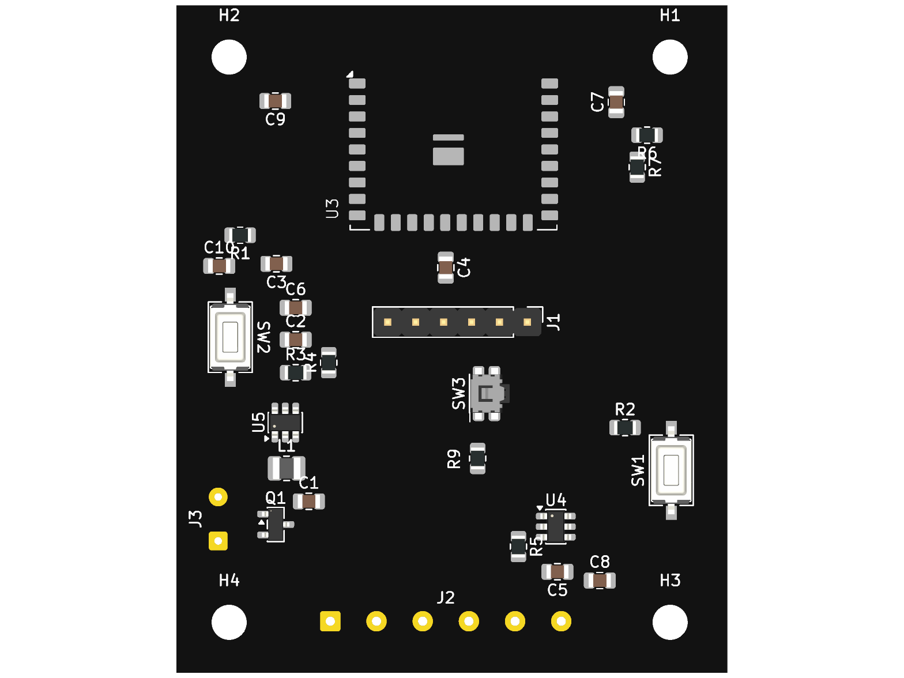
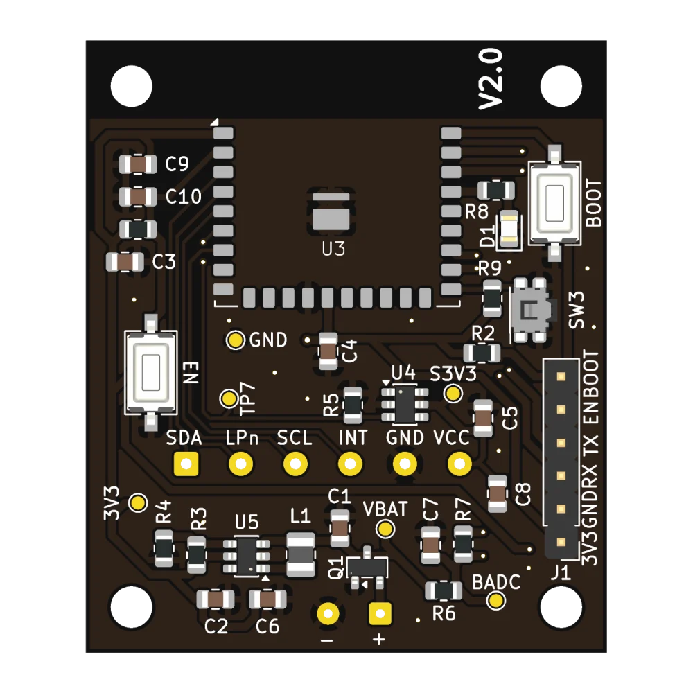
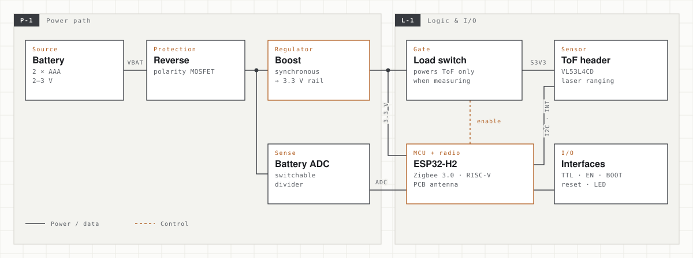
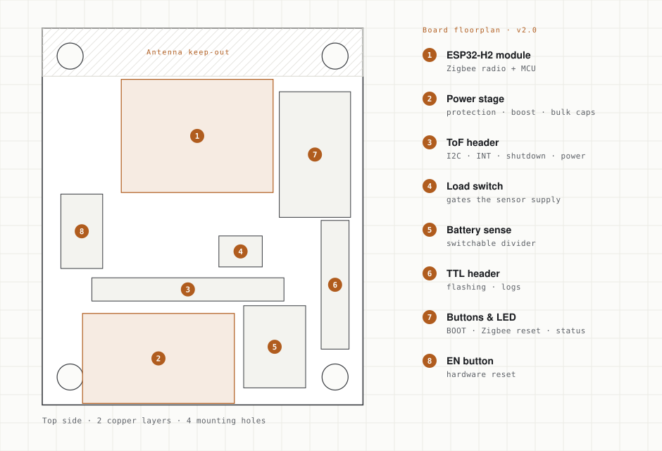
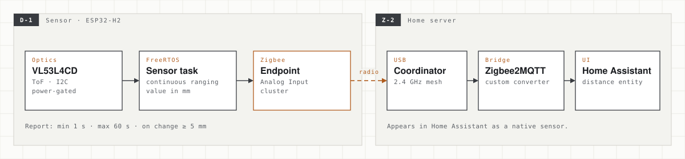

Zigbee ToF Distance Sensor
A fully custom smart-home sensor that measures distance to the millimetre with a laser time-of-flight chip and reports it over Zigbee into Home Assistant. I designed every layer myself: the schematic and PCB in KiCad, the power electronics for battery operation, the C firmware on ESP-IDF and the Zigbee2MQTT integration.

The problem
Commercial Zigbee sensors cover doors, motion and climate. A precise distance measurement is surprisingly hard to buy off the shelf: is the car in the garage, how full is a tank, is a desk occupied? I wanted a small, reliable device that feeds millimetre-level readings straight into my existing Zigbee2MQTT and Home Assistant setup, running on my home server.
It was also a deliberate exercise: one artefact that spans all three of my fields. Electrical design, embedded software and the integration layer all had to work together, with no off-the-shelf device in between.
From v1 to v2
v1: prove the chain works
A distance sensor is most useful where there is no socket: above a garage door, next to a tank, under a desk. So battery power was a requirement from the first revision. v1 was built around the ESP32-H2-MINI-1 module, which is both the Zigbee radio and the main processor, with ST's VL53L4CD time-of-flight sensor on I2C. A TPS61023 boost converter, a load switch for the sensor and reverse-polarity protection made up the power path. Its job was to prove the full chain: laser measurement, firmware, Zigbee mesh and a live value in Home Assistant.

v2: a smaller, cleaner board
For v2.0 (May 2026) I moved to the ESP32-H2-WROOM-02C module and the TLV61070A synchronous boost converter, and reworked the whole layout around them. The power path covers reverse-polarity protection, the boost stage from two cells to 3.3 V, a load switch that powers the ToF sensor only when it's needed, and a switchable divider for measuring the battery voltage.
The board was shrunk to the minimum, with a keep-out zone around the antenna. Test points were added to every important net for bring-up, and the sensor sits on its own header so it can face the target while the board stays out of the way.

Architecture
The v2 design is organised into functional blocks, so every part has one clear job:
- Boost — a TLV61070A synchronous boost converter turns 2–3 V from two cells into a stable 3.3 V rail. A P-MOSFET in front of it protects against a battery inserted the wrong way round. The inductor was chosen for saturation current and low DCR, not just inductance, because that's where boost efficiency is won or lost.
- Load switch for the ToF — a TPS22917 switches the sensor's supply from a GPIO. Between measurements the laser module can be fully powered down instead of idling.
- Battery measurement — a 1 MΩ / 1 MΩ divider into an ADC pin, enabled only while sampling, so the measurement doesn't drain the battery it measures.
- ESP32-H2-WROOM-02C — Zigbee radio and MCU in one certified module, with decoupling next to the supply pins.
- Interfaces — a 6-pin ToF header (I2C, interrupt, shutdown and power), a 6-pin TTL header for flashing and logs, EN and BOOT buttons, a separate Zigbee reset button and a status LED.

Layout
The two-layer layout keeps the boost converter's switching loop (input capacitor, inductor, converter and output capacitors) as tight as possible, to limit noise next to a 2.4 GHz radio. The antenna end of the module overhangs a copper-free keep-out area, following the vendor's guidelines.
Headers, buttons and the battery input sit on accessible edges, and every net that matters during bring-up has a labelled test point. 3D STEP models of the board, battery holder and standoffs are ready for designing a printed enclosure around it.

Firmware & integration
The firmware is written in C on ESP-IDF and FreeRTOS. It is split into small, focused modules: sensor polling, Zigbee device logic, the status LED state machine, pairing button handling, and an I2C driver layer around ST's official VL53L4CD driver.

- Zigbee device — the sensor joins the mesh and exposes distance as an Analog Input cluster value, a standard cluster that any coordinator can read.
- Continuous ranging — a FreeRTOS task polls the ToF sensor over I2C and publishes millimetre readings. Reporting is configurable: at least every 60 s, at most every 1 s, and only when the value changes by 5 mm or more.
- Pairing flow — holding the button for 3 seconds opens a 60-second pairing window, and the LED shows the pairing and joined states.
- Zigbee2MQTT converter — a custom external converter and configuration snippet make the sensor appear in Home Assistant as a native distance entity, with no manual MQTT plumbing.
Status & next steps
The firmware works end to end, and the sensor reports live distance into Home Assistant through its own converter. The v2 board was finished in May 2026. Gerbers, drill files, the BOM and the order sheet are ready for manufacturing.
Next: assemble the first v2 batch and bring it up using the test points. Then move the firmware from an always-on router to a sleepy end device that uses the load switch and battery measurement, so a pair of cells lasts as long as possible. Finally, design a printed enclosure around the existing STEP models.